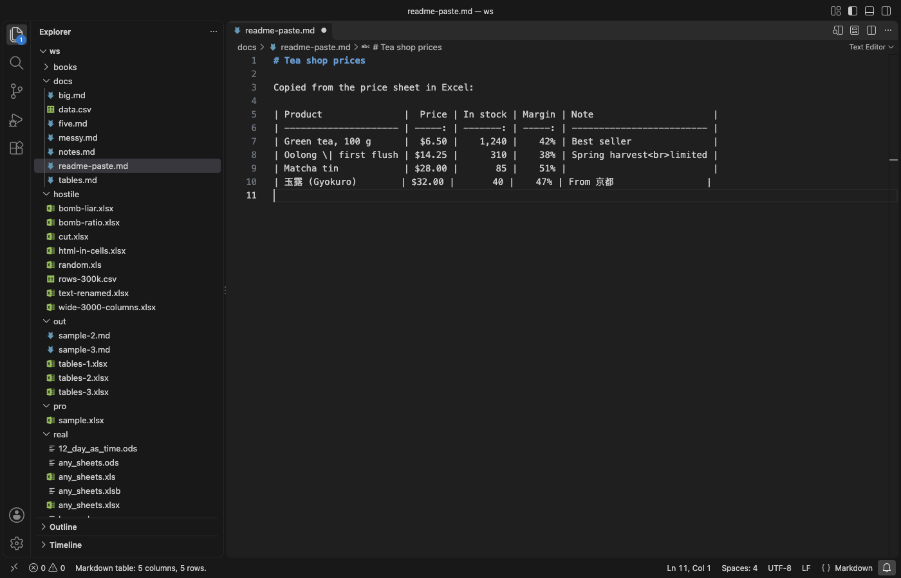

Open files in VS Code and Cursor / Tables and data
Convert a Markdown table back to CSV or Excel
To turn a Markdown table back into data, the pipes, the row of dashes and the escapes have to come out. Excel to Markdown (Paste & CSV) has two free commands, Convert Markdown Table to CSV and Convert Markdown Table to TSV, that replace the table under the cursor with CSV or tab-separated lines. <br> becomes a line break inside the cell again, and \| and < become | and <. Zovo Pro (USD 19 once) adds Save Markdown Tables as an Excel File, which saves every table of a document in one .xlsx file, with 3 free tries.
Free, MIT license. Extension ID zovo.zovo-excel-to-markdown, version 0.1.2. Needs VS Code 1.90.0 or newer.

Steps in VS Code
- Install Excel to Markdown (Paste & CSV) from the Marketplace, or press Ctrl+P (Cmd+P on macOS) and run
ext install zovo.zovo-excel-to-markdown. - Open the Markdown file and click inside the table, or select its lines. Select only one table.
- Press Ctrl+Shift+P (Cmd+Shift+P on macOS) and run "Excel to Markdown: Convert Markdown Table to CSV". For tabs, which paste straight into Excel or Google Sheets cells, run "Excel to Markdown: Convert Markdown Table to TSV".
- The table is replaced by CSV lines in the same file, and the status bar says how many rows were converted. The header row comes first and the row of dashes is dropped. Cells with a comma, a quote or a line break are put in quotes.
- Copy the lines into a new file (File, New Text File) and save it as
data.csv. Then press Ctrl+Z (Cmd+Z on macOS) in the Markdown file to get the table back. - To go the other way later, select the CSV lines and run "Excel to Markdown: Convert CSV/TSV to Markdown Table".
Where Zovo Pro saves time
Convert Markdown Table to CSV and Convert Markdown Table to TSV are free, with no limit and no sign-in, and they work offline. So are Convert CSV/TSV to Markdown Table, Format Markdown Table, Paste as Markdown Table and the spreadsheet preview, which also copies a sheet or a range of a workbook as CSV or TSV.
A document with many tables, such as a spec or a report, would need one CSV file per table. Save Markdown Tables as an Excel File puts every table of the document, or of the selected lines, in one .xlsx file. Each table gets its own sheet, named after the heading above it, and plain numbers and percentages such as 12% are stored as numbers, so Excel can sum them. The other Pro tools are Convert Workbooks to Markdown Files and Keep Excel Formats, Links and Merged Cells.
With Save Markdown Tables as an Excel File (Zovo Pro)
- Right-click the .md file in the Explorer and pick "Zovo Pro: Save Markdown Tables as an Excel File", or run "Excel to Markdown: Save Markdown tables as an Excel .xlsx file (Pro)" with the file open. Select some lines first to save only the tables in them.
- Pick where to save. The name of the Markdown file is filled in, with .xlsx at the end. Cancel uses no try.
- Click Preview it in the message to see the sheets. A try counts only when the file is saved.
Save Markdown Tables as an Excel File works 3 times on your computer before it asks for a license, and a try counts only when you get a result. Opening a file shows no popup and no countdown.
Zovo Pro costs USD 19 once. It is not a subscription, and it turns on the Pro tools in every Zovo extension, not only Excel to Markdown (Paste & CSV). After a card payment (Stripe) your license key shows on the next page. In VS Code, run "Zovo Pro: Enter Zovo Pro license key" from the Command Palette and paste it. The key is checked on your computer, with no network call. With GitHub Sponsors, pick the "$19 one time" tier, then run "Zovo Pro: I already paid: unlock with GitHub Sponsors" and sign in with the same GitHub account. With PayPal, send USD 19 with "Zovo Pro" in the note and the key comes by email within a day.
A team of 5: USD 59 once, by card or by PayPal. Every rule and every Pro tool is on the Zovo Pro page.
Steps in Cursor, Windsurf or VSCodium
- Open the Extensions view with Ctrl+Shift+X (Cmd+Shift+X on macOS).
- Search for
zovo.zovo-excel-to-markdownand click Install. Cursor, Windsurf and VSCodium install from Open VSX, where it is published aszovo/zovo-excel-to-markdown. - If your editor has no gallery, download the .vsix from the Open VSX page and run "Extensions: Install from VSIX...".
- Then use it the same way as in VS Code.
What Excel to Markdown (Paste & CSV) handles
- Escaped pipes (
\|), other backslash escapes and the entities<,>,"and&, which turn back into the plain characters. <br>in a cell, which becomes a line break inside a quoted CSV cell.- Tables with or without a pipe at the start and end of each line.
- Rows with missing cells, which get empty cells.
What it does not do
- The commands do not write a .csv file. They replace the table in the open file, and you save the result yourself.
- One table per run. If you select two tables, the lines of the second one, its row of dashes too, end up in the result as data.
- Markdown inside a cell, such as the asterisks around bold words or a link, stays as typed text. The alignment colons are dropped, because CSV has no alignment.
- In the Pro tool, numbers with a thousands separator or a currency sign, such as 1,250 or $12.50, are saved as text. Sheet names are cut to 31 characters, and one file holds at most 255 tables.
- A table over 200,000 lines is not converted, and columns after the 2,000th are dropped.
Other options
- TableConvert. A free web page that converts a pasted Markdown table to CSV, Excel and other formats. Your table goes into a website.
- Text to Columns in Excel. Paste the table lines into one column and split them with Data, Text to Columns and the | sign as the delimiter. Then delete the row of dashes and the empty first and last columns. Escapes such as
<br>stay as text.
Install counts and Open VSX status were checked on 13 November 2026. Descriptions in quotes are the extensions' own.
Questions
Excel shows broken characters in the CSV. What can I do?
VS Code saves files as UTF-8 without a byte order mark, and some Excel versions then guess the wrong encoding. Click the encoding in the status bar, pick Save with Encoding and choose UTF-8 with BOM. Or use the TSV command and paste the lines into Excel.
Can I keep the Markdown table and get the CSV too?
Yes. Copy the CSV lines, then press Ctrl+Z (Cmd+Z on macOS) to bring the table back. Or copy the table to a new file first and convert it there.
Does it work outside Markdown files?
Yes. The commands run from the Command Palette in any text file, for example a new untitled file with a table pasted into it.
Does it work in Cursor or Windsurf?
Yes. Cursor, Windsurf and VSCodium install extensions from Open VSX. Search for the extension in their Extensions view and install it there.
More about Excel to Markdown (Paste & CSV)
Read the Excel to Markdown (Paste & CSV) page for every feature and setting, or the source code on GitHub.
Related guides
- Turn Excel cells, a sheet or a CSV file into a Markdown table in VS Code
- Line up the columns of a Markdown table in VS Code
- Open an Excel .xlsx file in VS Code
- Open an Excel file in Cursor
Zovo Pro and support
Zovo Pro: USD 19 once, every Zovo viewer. It turns on the Pro tools in this extension and in the other Zovo extensions you use. The free features stay free.
After a card payment your license key shows on the next page. Paste it with the command "Zovo Pro: Enter a key".
You can also support the work with no Pro:
Need your format supported?
Open a format request with a sample file, and I reply there whether it can be done. For USD 299 once, through this GitHub Sponsors tier, I add your file format or a missing feature to this extension, with tests, within 7 days.